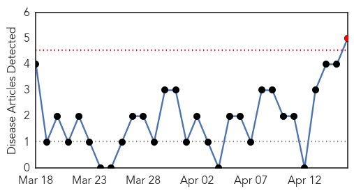
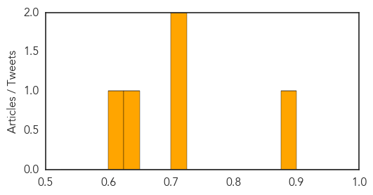

Pertussis
30-Day Web Trend
1 alerts, 0 warnings

30-Day Twitter Trend
1 alerts, 0 warnings

Article Locations
Article Confidences
Top Articles:
- 0.894
- Eight cases of whooping cough confirmed at Radnor schools
- 0.716
- National Infant Immunization Week is April 18-25
- 0.705
- WA firefighters on alert after whooping cough diagnosis at Perth station
- 0.634
- WA firefighters on alert after whooping cough diagnosis at Perth station
- 0.624
- Whooping cough outbreak growing in Washington
Top Tweets:
-
No tweets found for Apr 16, 2015
Mold/Fungal
30-Day Web Trend
1 alerts, 0 warnings

30-Day Twitter Trend
0 alerts, 0 warnings

Article Locations

Article Confidences

Top Articles:
-
No articles found for Apr 16, 2015
Top Tweets:
-
No tweets found for Apr 16, 2015